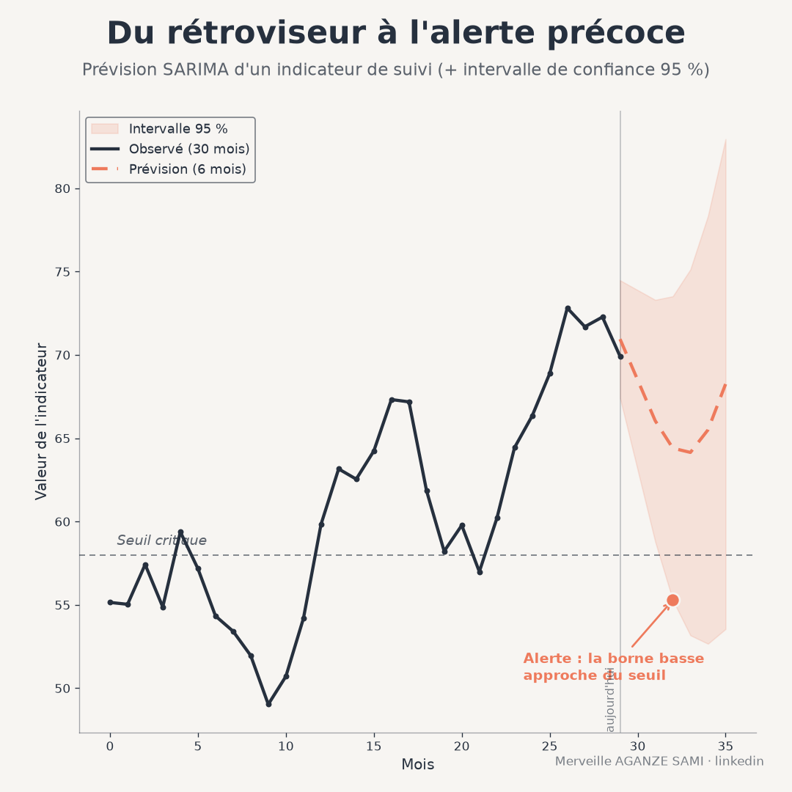

Monitoring systems generally provide a retrospective reading: they document a gap once it has occurred. Yet a monthly indicator series — service attendance, distributed volumes, notified cases — most often contains usable structure: a trend, a periodicity, a dependence between successive values. That structure supports a short-term projection.
The value of such a projection is not knowing the future value, but gaining lead time. If the expected trajectory approaches a decision threshold, the team can act before the gap is recorded. Monitoring then ceases to be purely descriptive.
1. What the model represents
An autoregressive integrated moving average model describes the value of a series through three mechanisms: dependence on past values, dependence on past errors, and a differencing step intended to remove a trend. Its seasonal variant adds these same three mechanisms at the period scale — from one July to the next, for example. The overall methodology was formalised in the founding work on time series analysis and control (Box et al., 2015).
The stationarity condition. The model assumes a series whose statistical properties — mean, variance, dependence structure — do not drift over time. A marked trend or seasonality violates this condition; differencing, ordinary then seasonal, restores it. The number of differences applied constitutes an assumption about the nature of the series and must be documented, as it appreciably changes forecast behaviour at long horizons.
2. Identify, estimate, validate
The classical approach proceeds iteratively: examining autocorrelation functions to propose orders, estimating parameters, then examining residuals. Automatic procedures now search the space of possible orders using a penalised information criterion, which lightens the identification step without removing the need for validation (Hyndman & Khandakar, 2008).
Automatic selection nonetheless calls for a caveat: an information criterion compares models fitted on the same data but does not guarantee out-of-sample forecast quality. It therefore does not replace the two checks described below.
3. Two checks before going live
- 1Residuals consistent with white noise. If residuals retain an autocorrelation structure, usable information has not been captured by the model. A test covering several lags jointly verifies this absence of structure (Ljung & Box, 1978).
- 2Rolling-origin evaluation. Rather than a single split between training and test periods, the forecast is re-evaluated by advancing the origin progressively through time. This procedure reproduces real usage conditions and provides a more representative error measure.
- 3Comparison with a simple benchmark. A model must be compared with a seasonal naive forecast — the value of the same month in the previous year. A model that fails to beat it adds nothing, and large-scale comparisons show that simple methods remain hard to beat on short series (Makridakis et al., 2020).
4. The interval rather than the central value
The point value of a forecast has a negligible probability of being exact. The decision-relevant information lies in the interval: its width expresses the degree of uncertainty and grows with the horizon. A dashboard displaying a projection without its interval conveys a precision the model does not possess.
One nuance deserves flagging: intervals produced by time series models are generally narrower than actual uncertainty would warrant, because they incorporate residual variability but not uncertainty about the estimated parameters and about the choice of model itself (Chatfield, 1993). A prudent reading treats the displayed interval as a lower bound on uncertainty.
5. Integration into an alert system
Three implementation choices determine operational usefulness. The first concerns the trigger rule: it is better placed on the interval bound than on the central value, and defined in advance together with the decision threshold concerned. The second concerns retraining: a model refitted at each data refresh stays adapted, provided order changes are traced. The third concerns the horizon: it must match the actual lead time for implementing a corrective measure, failing which the alert arrives too late to be useful.
A fourth element, often neglected, is archiving the forecasts issued. Comparing projections with outturns after the fact is the only way to establish the system's reliability with teams and partners.
- Series length. Estimating a monthly seasonal component requires several complete cycles. Below three years, seasonal orders are poorly identified.
- Structural breaks. A protocol change, a coverage extension or an exceptional event invalidates the stability assumption. The model will extend a regime that no longer holds.
- Feedback effect. When an alert triggers corrective action, the observed series departs from the forecast trajectory by construction. This effect is desirable, but it precludes assessing model quality over periods in which an intervention took place.
- Low counts. On small-magnitude counts, random variability dominates the structure and the forecast loses informative value.
Key points
- The seasonal model describes dependence on past values and errors at both time scales
- Automatic order selection removes neither the residual test nor out-of-sample evaluation
- A forecast must be compared with a seasonal naive benchmark before adoption
- The interval carries the decision-relevant information and generally understates real uncertainty
- The useful horizon is the lead time for implementing a corrective measure
Forecasting is not about establishing what will happen, but about making a probable trajectory visible together with its margin of error. The value of the exercise lies in the lead time it provides, not in the accuracy of the figure announced.
References
- Box, G. E. P., Jenkins, G. M., Reinsel, G. C., & Ljung, G. M. (2015). Time Series Analysis: Forecasting and Control (5th ed.). Hoboken: John Wiley & Sons.
- Chatfield, C. (1993). Calculating Interval Forecasts. Journal of Business & Economic Statistics, 11(2), 121–135. doi.org/10.1080/07350015.1993.10509938
- Hyndman, R. J., & Khandakar, Y. (2008). Automatic Time Series Forecasting: The forecast Package for R. Journal of Statistical Software, 27(3), 1–22. doi.org/10.18637/jss.v027.i03
- Ljung, G. M., & Box, G. E. P. (1978). On a measure of lack of fit in time series models. Biometrika, 65(2), 297–303. doi.org/10.1093/biomet/65.2.297
- Makridakis, S., Spiliotis, E., & Assimakopoulos, V. (2020). The M4 Competition: 100,000 time series and 61 forecasting methods. International Journal of Forecasting, 36(1), 54–74. doi.org/10.1016/j.ijforecast.2019.04.014

Merveille Aganze Sami
MEL & Database Management Advisor. 9+ years of experience in monitoring & evaluation, GIS and digitalization with international organizations (GIZ, Enabel) in DR Congo.
A predictive dashboard to build?
Get in touch